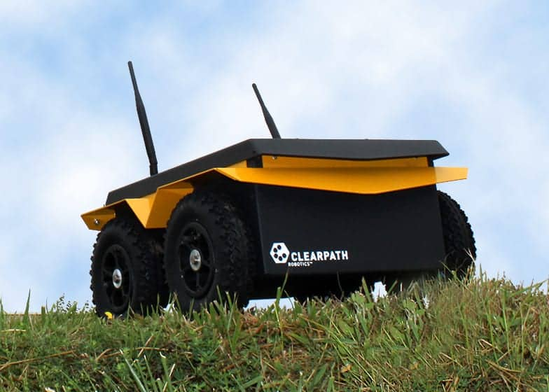
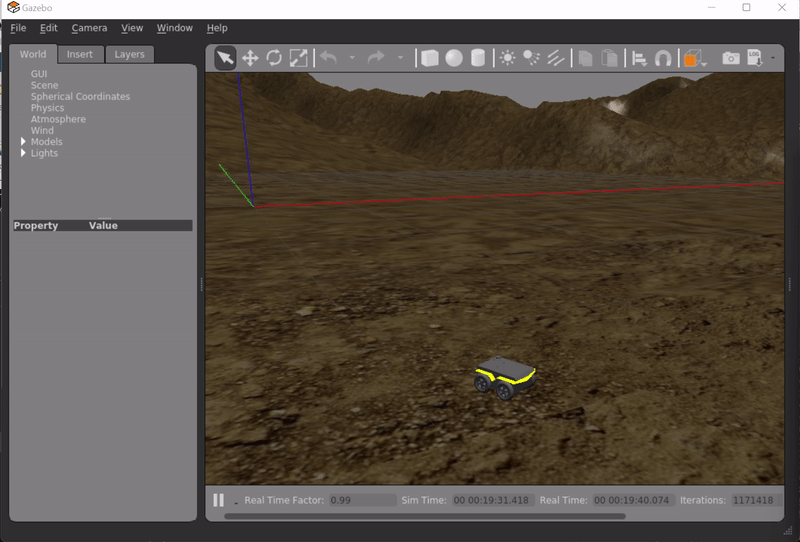
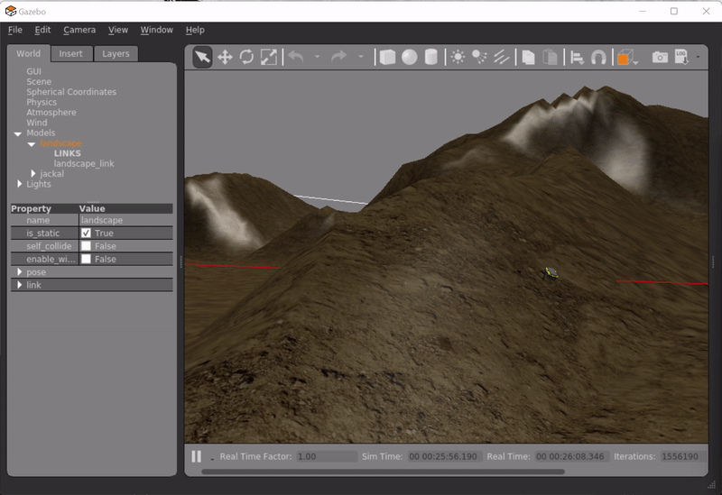
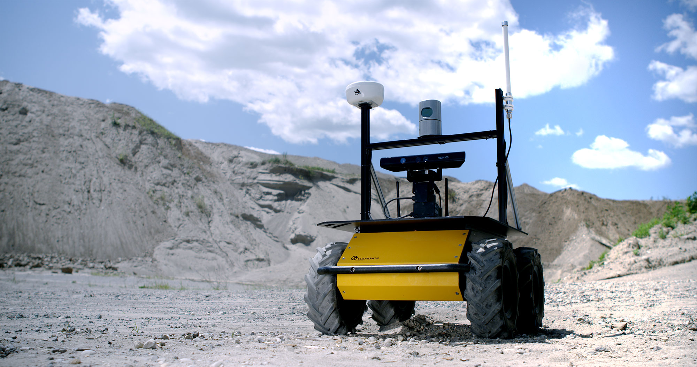

Controls, Simulation, and Implementation in ROS
Summary
The following projects consist of classic control algorithms and robot kinematics implemented in ROS and visualized with Rvis and Gazebo.
UR5 Robot Arm
To control the 6-DoF robot arm, I started by writing a script that calculates forward kinematic for the UR5. It converts joint angles into rotation and translation values information for each frame shown in red, blue, and green. The resultant joint angles are then be used later during moving controls.
Next, “resolved rate control” is implemented to move the joints toward the goal, in which joint velocity is needed to move the robot arm at a constant linear velocity toward the goal coordinates. Joint velocity can be found by multiplying the inverse Jacobian with the body linear velocity of the robot. With that, the gazebo node was ready to simulate the visualization in Rviz.

___
Jackal Robot
Jackal Unmanned Ground Vehicle (UGV) is a fully integrated and ruggedized robot made by Clearpath Robotics for all-terrain operation and experimentation. The robot includes built-in GPS, IMU, and computer. It is also comes with a complete ROS API, which can be used to run simulations in a lab setting.
In this simulation, Extended Kalman Filter Localization is implemented to stabilized GPS and IMU readings during th (r, p, y) data as is, together the 6-D s system is fed through EKF to predict and correct the system during the drive.
Image Source: https://www.unmannedsystemstechnology.com/
Sometimes, you tumble, but you just have to not give up.
___
Husky
Husky UGV is a larger payloads and customizationable robot also developed by Clearpath Robotics. Like the Jackal, the Husky is fully supported in ROS and is popular among engineers and researchers globally.
Image Source: https://clearpathrobotics.com/